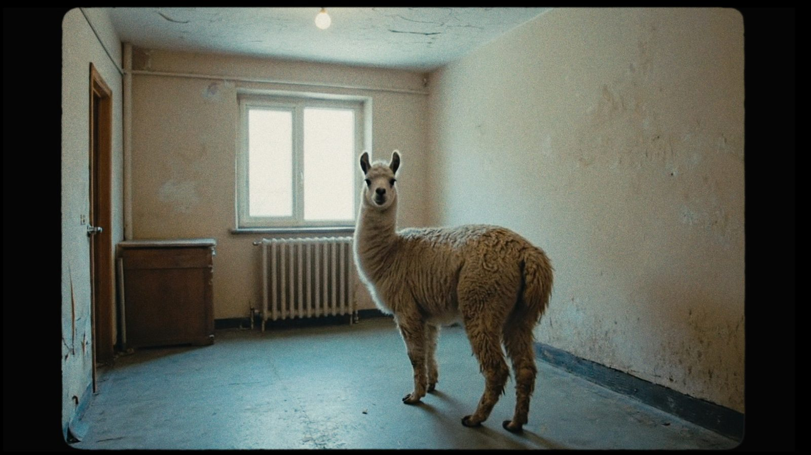
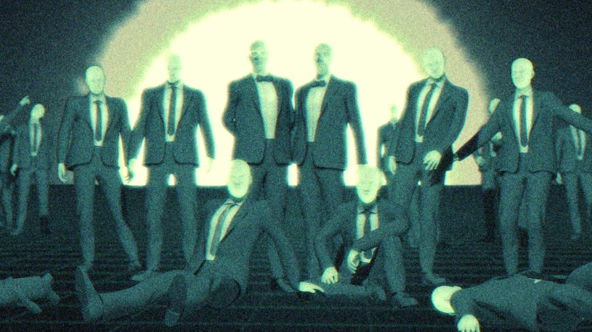

Purple Disco Machine
Disco Cherry
A proper example of a finished treatment — ordered the way a real one would be, rather than a demonstration of every feature.
The whole video is built around a single gesture: she reaches for something that isn't there. Everything else in the frame — the light, the crowd, the cherry — exists to make that gesture land.
The world
We open inside the club, not outside it. No establishing shot, no walk-in. The first frame is already four in the morning and the audience has to work out where they are from the light alone.
The palette is almost entirely red and black. The only break is the cherry itself, which is the one object in the film allowed to be a colour.

The lighting is practical wherever possible. We build the club out of LED tubes and haze, and we shoot through the haze rather than past it. That gives us the flat, hot look in the reference below.

Choreography
The dance is not choreography in the video sense. It's a repeatable set of movements that the crowd and our lead share, so we can cut between them without breaking rhythm.
The rule is simple. Everyone in the room is doing the same six moves, slightly out of time with each other. Our lead is the only person doing them precisely.
That precision is the whole character. It should look like muscle memory, not performance — she's not dancing at anyone, she's been doing this all night.
We shoot the choreography in two passes: one locked-off for the grid, one handheld for the detail. The edit intercuts them so the rhythm never settles.
The cherry passes from hand to hand across the video. Each person who holds
it stops dancing for exactly one beat.
Performance
Our lead should look like she's forgotten the camera is there. Nothing plays to lens until the final chorus.
She barely blinks. She doesn't smile at anyone. The energy comes entirely from the precision of the movement, not from selling the track. When she finally does look up, it should feel like the room noticing her rather than the other way round.
The supporting cast are real dancers, not extras — but we direct them to move like people at a party rather than like performers. Slightly drunk timing. Hands in the wrong place. That wrongness is what makes her look right.
Grade and finish
Everything is pushed toward red in the highlights and left cold in the shadows. We never resolve that tension — the blacks stay blue-black, the whites stay orange.

The cherry is the one exception. It gets a light pass of its own so it holds its colour in every shot. If we lose the cherry, we lose the video.
Sound design carries the last thirty seconds entirely. The track drops to a single held bass note while the crowd keeps moving without music — which is the image the whole video has been building toward.